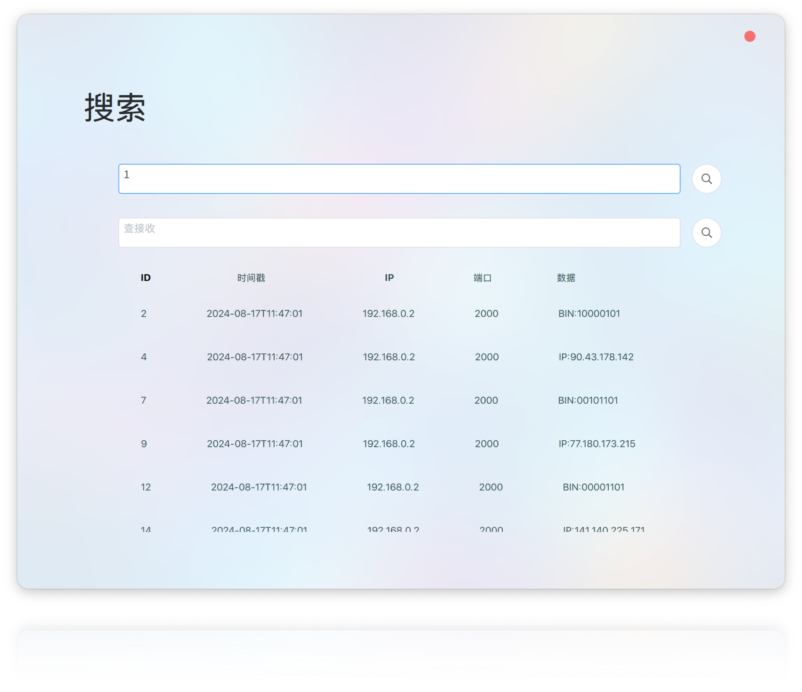

| 系统 | 架构 | 可用 |
|---|---|---|
| MacOS | ARM, x64 | 是 |
| Windows | ARM，x86_64 | 是 |
| Linux | x86_64 | 是，但未经测试 |
graph TB
subgraph 查询界面
D1[输入查询条件]
D2[显示历史记录]
end
subgraph 设置界面
C1[调整发送频率]
C2[调整发送数量]
C3[调整线程数]
end
subgraph 主界面
A1[输入源 IP 和端口]
A2[输入目标 IP 和端口]
A3[控制发送操作]
A4[设置发送参数]
B1[启动和监控数据发送]
end

∏
该类主要功能是用于发送和接收数据包。
类定义：
UDPServer：继承自 QObject 的类，是 UDP 服务器的核心实现。构造函数与析构函数：
explicit UDPServer(QObject *parent = nullptr);：构造函数，允许设置父对象。~UDPServer();：析构函数，释放资源。公共方法：
void startSending(); 与 void stopSending();：控制数据发送的开始和停止。bool bind(QString ip, QString port);：将服务器绑定到指定的 IP 地址和端口。void setDestIP(QString destIP); 与 void setDestPort(QString destPort);：设置目标 IP 和端口，用于数据发送。void setThreadNum(int num);：设置线程数。void setFieldDefinitions(QList<FieldDefinition> fieldDefinitions);：设置字段定义列表。QByteArray generateRandomData(const FieldDefinition &field);：基于字段定义生成随机数据。QList<QByteArray> generateMessageData(QList<FieldDefinition> fieldDefinitions);：生成消息数据列表。static void saveDataToDatabase(QSqlDatabase db, const QString &senderIp, quint16 senderPort, const QByteArray &data);：静态方法用于将数据保存到数据库。QVariantList searchInSendDb(const QString &searchTerm); 与 QVariantList searchInRecDb(const QString &searchTerm);：在发送和接收数据库中进行搜索。私有成员变量：
QSqlDatabase m_db_rec 和 QSqlDatabase m_db_send 用于记录发送和接收的数据。信号：
void errorOccurred(const QString &error);：在发生错误时触发的信号。void packetSent();：表示数据包已发送的信号。void sendFinished();：表示发送操作完成的信号。私有槽：
void sendPacket();：执行发送数据包的任务。void receivePacket();：处理接收的数据包。该类用于处理和展示数据模型。
类定义：
SendTableModel 类定义为 QAbstractListModel 的子类，用于在qml中实现表格功能。角色定义：
RoleNames 枚举定义了五个角色，分别是：
IdRole：用户角色 IdTimestampRole：时间戳SenderIpRole： IPSenderPortRole：端口DataRole：数据内容构造函数：
explicit SendTableModel(QObject *parent = nullptr)：构造函数，接受一个可选的父对象。虚函数重载：
rowCount()：返回数据模型中的行数。data()：根据索引和角色返回相应的数据。roleNames()：重载以返回角色名称的哈希映射。可调用方法：
addData(const QVariantMap &data)：用于添加数据到模型。clearData()：清空模型中的数据。私有成员：
m_data：一个 QList<QVariantMap> 类型的成员变量，用于存储数据。controller 类，该类继承自 QQuickItem，并使用 Qt 框架进行开发。此类主要负责处理与 XML 文件解析、网络通信和信号槽机制相关的功能，qml通过此类与c++进行交互。
类定义:
class controller：ml通过此类与c++进行交互。公共方法:
selectXMLFile(const QString &fileUrl)：选择 XML 文件。getProtocolConfigAsString()：获取协议配置的字符串表示。getSourceIP(), getSourcePort(), getDestinationIP(), getDestinationPort()：获取和返回源和目的地的 IP 和端口。setDestinationIP(QString DestIP)、setDestinationPort(QString DestPort)：设置目的地的 IP 和端口。checkIPString(QString ipStr)、checkPortString(QString portStr)：验证 IP 地址和端口字符串格式。setFrequence(QString Freq)、setNumber(QString Num)、setThreadNum(QString ThreadNum)：设置频率、数量和线程数。searchInSendDb(const QString &searchTerm) 和 searchInRecDb(const QString &searchTerm)：在发送和接收数据库中进行搜索。信号:
xmlFilePathChanged(), protocolConfigChanged(), sendingStarted(), sendingStopped(), sendingStateChanged()：定义了一些信号，用于状态和数据变化的通知。私有成员:
XMLProtocolParser m_xmlParser：用于解析 XML 协议配置。ProtocolConfig m_protocolConfig：存储协议配置信息。QList<FieldDefinition> m_fieldDefinitions：字段定义列表。UDPServer m_udpServer：用于 UDP 服务器处理。bool m_isSending：标志发送状态。SendTableModel sendTableModel：用于管理发送数据的模型。公共槽:
startSending()：启动发送操作。stopSending()：停止发送操作。
文件名：udpreceivetask.h概述：ReceiveTask 的类，该类继承自 QRunnable，用于处理接收到的UDP数据报。
主要内容：
类定义：
ReceiveTask 类接收四个参数：一个指向 QUdpSocket 的指针、发送者的地址、发送者的端口和接收到的数据。成员方法：
run() 方法被重写，负责处理接收到的UDP数据报，并在调试输出中显示发送者信息和数据内容。私有成员：
m_socket（UDP套接字指针）、m_sender（发送者地址）、m_senderPort（发送者端口）、m_data（接收到的数据）。预处理指令：
该文件定义了一个名为 SendTask 的类，该类继承自 QRunnable，用于通过 UDP 套接字发送数据报。
包含的头文件：
QRunnable、QUdpSocket、QObject 等，这是 Qt 框架的类，支持多线程和网络通信。QFile、QMessageBox、QWidget、QString、QTimer、QRandomGenerator 和 QThreadPool。类 SendTask：
QUdpSocket 指针、要发送的数据、目标 IP 地址和目标端口号，并初始化相应的成员变量。run()：重写了 QRunnable 的 run 方法，负责发送数据报并打印发送的信息到调试输出。私有成员变量：
m_socket：指向用于发送数据的 UDP 套接字。m_data：待发送的字节数组数据。m_destIP：目标 IP 地址的字符串表示。m_destPort：目标端口号。SendTask 类是设计用于在 QThreadPool 中并发执行，在多线程环境中可以安全地发送数据。
XMLProtocolParser类用于解析XML格式的协议文件。
FieldDefinition：此结构体用于定义字段的属性，包括：
fieldName: 字段名称isSelected: 字段是否被选中datatype: 数据类型data: 字段信息bitIndex: 字段的起始位置length: 字段长度loopEnd: 字段结束位置comment: 字段说明minimum: 最小值maximum: 最大值precision: 精度isKey: 是否为关键字段ProtocolConfig：此结构体存储协议的配置信息，包括：
sourceIP: 源IP地址destIP: 目的IP地址sourcePort: 源端口destPort: 目的端口protoHead: 报文头nType: 报文类型system: 系统信息XMLProtocolParser()，用于初始化对象。bool parseProtocol(const QString &filePath);：解析给定路径的协议文件。QList<FieldDefinition> getFieldDefinitions() const;：获取字段定义列表，使用const修饰以防止修改对象状态。ProtocolConfig getProtocolConfig();：获取协议配置信息。QList<FieldDefinition> fieldDefinitions;：存储字段定义的列表。ProtocolConfig protocolConfig;：存储协议配置信息。udp_data_recudp_data![kissing]() *
* id 是表 **records 的主键，唯一标识每一条记录。id: 自动递增的唯一标识符，用于区分每一条记录。sender_ip: 存储发送者的 IP 地址，不能为空。sender_port: 存储发送者的端口号，不能为空。timestamp: 记录数据发送的时间，默认值为当前时间，不能为空。data: 存储发送的数据内容，不能为空。| 字段名 | 字段含义 | 字段类型 | 约束 | 默认值 |
|---|---|---|---|---|
| id | 记录唯一标识 | INT | PRIMARY KEY | AUTO_INCREMENT |
| sender_ip | IP地址 | VARCHAR(15) | NOT NULL | N/A |
| sender_port | 端口 | INT | NOT NULL | N/A |
| timestamp | 记录发送时间 | DATETIME | NOT NULL | CURRENT_TIMESTAMP |
| data | 数据内容 | TEXT | NOT NULL | N/A |